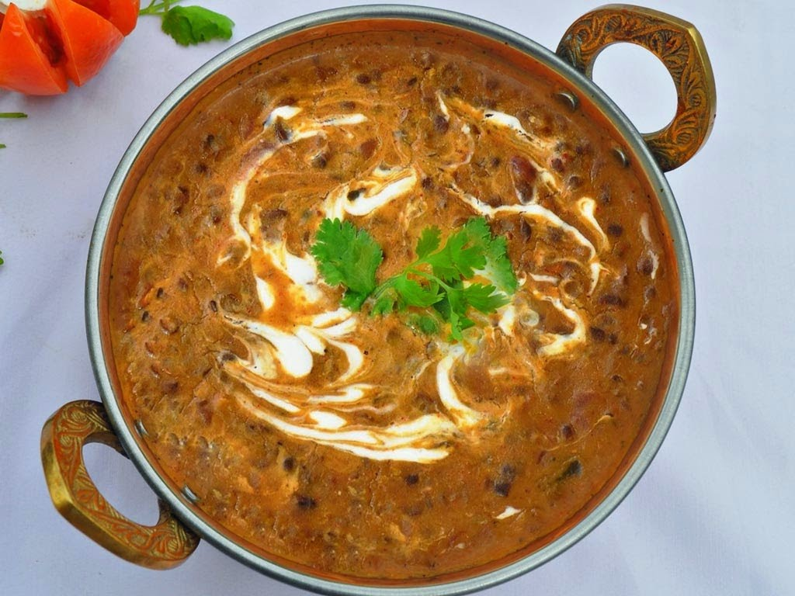

Dal Makhani Recipe
Ingredients:
- 1 cup whole black lentils (sabut urad dal)
- 1/4 cup kidney beans (rajma)
- 1 onion, finely chopped
- 2 tomatoes, pureed
- 1 inch ginger, grated
- 4 cloves garlic, minced
- 2 green chilies, slit
- 1 teaspoon cumin seeds
- 1/2 teaspoon turmeric powder
- 1 teaspoon red chili powder
- 1 teaspoon coriander powder
- 1/2 cup cream
- 1 tablespoon butter
- 1 tablespoon oil
- Salt to taste
Instructions:
- Prepare the Lentils:
- Wash and soak whole black lentils and kidney beans overnight.
- Pressure cook the soaked lentils and kidney beans with salt until soft and creamy.
- Prepare the Gravy:
- Heat oil and butter in a pan. Add cumin seeds and let them splutter.
- Add chopped onions and sauté until golden brown.
- Add grated ginger, minced garlic, and slit green chilies. Sauté for a minute.
- Add pureed tomatoes and cook until the oil separates.
- Add turmeric powder, red chili powder, and coriander powder. Cook for another 2 minutes.
- Add cooked lentils and kidney beans along with the water from the pressure cooker. Mix well.
- Simmer for 20-30 minutes until the flavors are well blended.
- Stir in cream and cook for another 5 minutes.
Serving Tips:
Serve Dal Makhani hot, garnished with fresh cream and chopped coriander leaves. Enjoy with rice, naan, or roti.
Ratings and Reviews
Average rating: 0/5